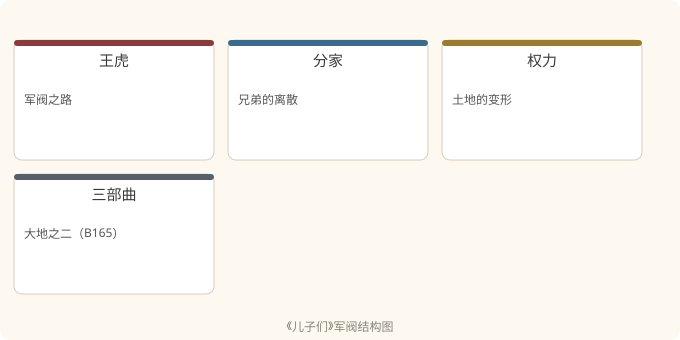

儿子们
一、基本信息
| 作者 | 赛珍珠 |
|---|---|
| 成书/出版 | 1932年（作者页 B165 口径：儿子们（Sons）） Pearl S. Buck — Encyclopaedia Britannica（百科全书） |
| 国别/地区 | 中国 |
| 时代 | 现当代 · 现代 |
| 体裁 | 长篇小说 |
| 语言 | 英语 |

《儿子们》军阀结构图（主题·结构图）
二、创作背景
作者页（B165）：赛珍珠 major_works 载'儿子们（Sons）'——《大地》三部曲第二部（B165 作者页定位，详见 dadi 条核对）。
题材（通说待核）：王虎（王龙之子）的军阀之路——大地财富向权力的转化。
三、内容脉络
王虎成为军阀：兄弟分家与儿子的野心（通说待核）。
四、主要人物表
| 人物 | 身份 | 说明 |
|---|---|---|
| 王虎 | 王龙之子 | 军阀（通说待核） |
五、主题与艺术特点
- 军阀时代的家族史（通说待核）。
- 土地→权力的转化（通说）。
- 三部曲中段（通说）。
六、影响与评论
- 作者页：赛珍珠'大地三部曲'（B165 作者页口径）。
Pearl S. Buck — Encyclopaedia Britannica（百科全书） - 作者页：赛珍珠1938年诺奖（B165 作者级）。
Pearl S. Buck — Encyclopaedia Britannica（百科全书）
七、阅读建议
难点
- 三部曲世系。
- 军阀史。
- 《儿子们》（漓江出版社等版本，通说待核）。
- 英文原版（公有领域渐近）。
《大地》→《儿子们》→《分家》。
八、待核实
- 1932年出版（John Day说）核对。
- 王虎人名核对。
- 三部曲总名（The House of Wang说）待核。
本页主要来源
赛珍珠的其他收录作品：大地